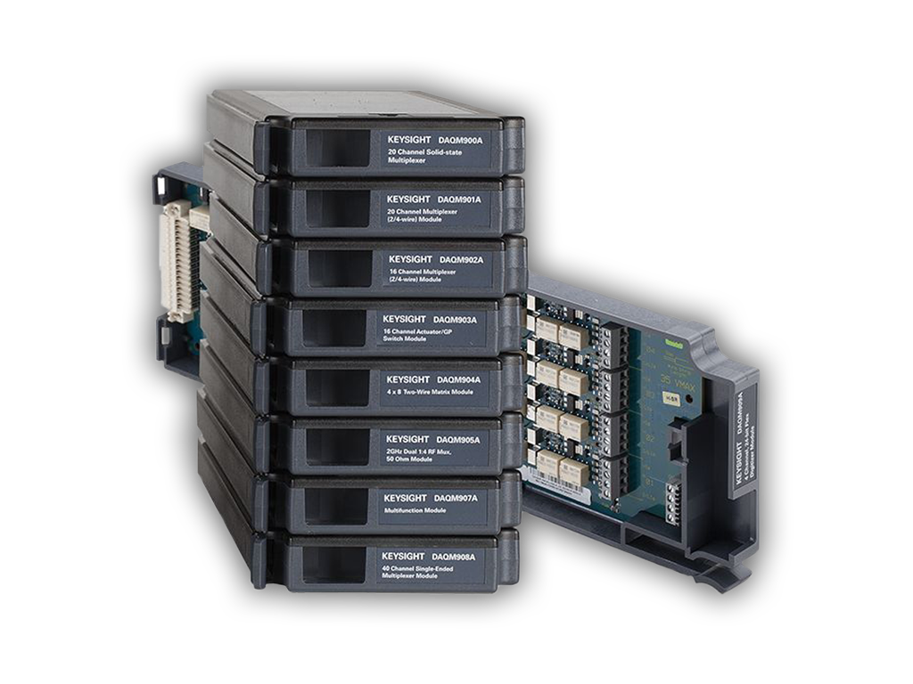

<!-- Base Extension -->
{% extends 'daq/daq_base.html' %}


<!-- Page Label -->
{% block page_label %}
    Home
{% endblock %}


<!-- Main Content -->
{% block page_content %}
<div class="index-page">
    <div class="index-pic">
    
    </div>
    <div class="index-menu">
        <button class="btn-main primary-bg" id="daq-tutorial">Tutorial / Setup</button>
        <button class="btn-main primary-bg" id="daq-new-calibration">New Calibration</button>
        <button class="btn-main primary-bg" id="daq-resume-calibration" disabled>ADJ (disabled)</button>
        <button class="btn-main primary-bg" id="daq-calibration-reports">Calibration Reports</button>
    </div>
</div>
{% endblock %}


<!-- Page JS Files -->
{% block page_js_include %}
<script src="../../js/daq/Daq_Index.js"></script>
{% endblock %}